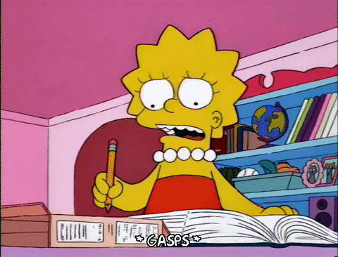

The verb To Be lesson is finished!
Now you can use this verb correctly.

Before you leave, let's practice what you learned today. 
- Write 9 sentences (affirmative - negative - interrogative) about you, your family and friends using the verb to be.
Check that you used the correct conjugation.
Check the singular and plural words.
If you don't know how to say a word, use the online dictionary.
Did you like this activity?
- Write a short personal reflection in your portfolio about this activity. Use sentences similar to:
I liked that... I learned that... It is difficult to... The activity is funny/boring/interesting...
- Create a glossary with all the new words you learned in this activity.
Problems with vocabulary?